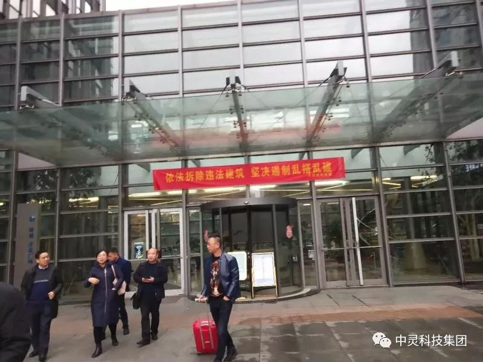

2018年12月22日，中灵科技(集团)公司董事长曾广林先生、总裁周志儒先生、高级顾问周扬先生等一行应上海中青旅执行董事金泰荣先生的邀请，风尘仆仆赶到杭州商谈有关合作事宜。中灵科技(集团)公司致力于供应链金融服务平台的打造，旗下“票票库”是湖南首家“互联网+票据”撮合流转平台，上海中青旅金泰荣董事也是票据领域业内资深专家，非常看好中灵科技(集团)公司旗下的“互联网+票据”这一块业务，合作意愿强烈。中灵科技(集团)公司曾广林董事长向金泰荣先生关于中灵科技(集团)公司的基本情况作了详细阐述，对未来的规划与发展双方进行了深入探讨和交流。
中灵集团以曾广林董事长为首的高管团队此次杭州之行，还有一个更重要的任务就是:中灵科技(集团)公司拟成立浙江省分公司，分公司地址设在杭州市中心的西湖文化广场，并就筹备小组的人事安排作了重要布署，明确谢总、胡总、邹总为筹备小组成员，谢总为筹备小组组长。宣告中灵科技(集团)公司在全国的布局迈开了关键性的第一步。同时也意味着中灵科技(集团)公司将为浙江的中小微企业提供方便、快捷、低成本的融资渠道，实现共享共赢。
浙江省是全国的经济大省，杭州市又是浙江省的政治、文化、经济中心，中灵科技（集团）浙江省分公司的成立将打响中灵科技(集团)公司描篇布局打响关键的第一枪，标志着中灵科技(集团)公司向全国市场发展步入了快车道，紧接着北京、上海、深圳、西安等城市分公司的筹建也将紧锣密鼓地启动。